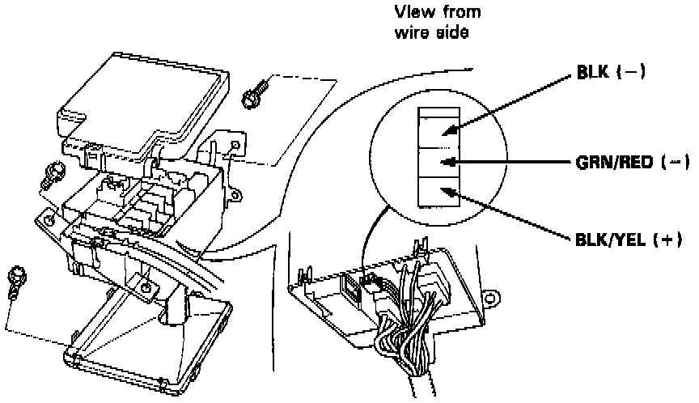

Electric Load Sensor: Description and Operation
ELD Locator & Connector Location:

PURPOSE
The Electric Load Detector (ELD) is used by the Engine Control Module (ECM) to sense the total amperage draw placed on the electrical system.
OPERATION
Sends a voltage reference to the ECM which then determines and controls the charge rate of the alternator.